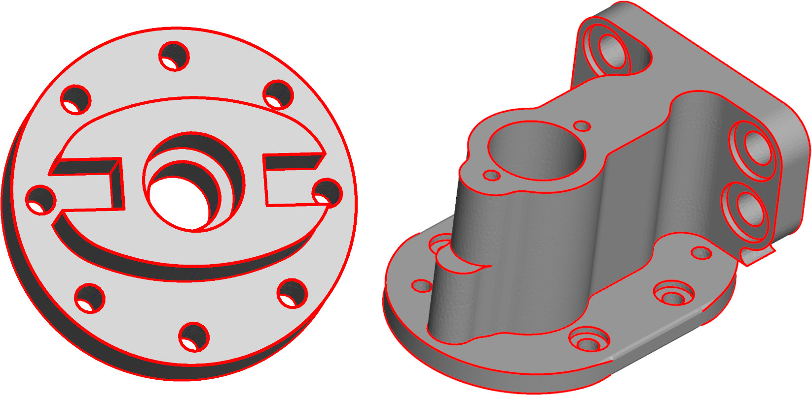

Surface Feature Detection
Detecting feature edges of a surface mesh is done in mouette in the FeatureEdgeDetector class. This class encapsulates various strategies of detection and stores the result for a given mesh.
Usage
or
This fills the various container attributes that can be accessed in the FeatureEdgeDetector class.

FeatureEdgeDetector(only_border=False, flag_corners=True, corner_order=4, compute_feature_graph=True, verbose=True)
Bases: Worker
Worker used to detect features on a surface mesh. Feature edges are of three types:
-
Marked edges from the input file (reading the "hard_edges" attribute on edges)
-
Boundary edges
-
Edges such that their dihedral angle is large (crease edges)
Parameters:
| Name | Type | Description | Default |
|---|---|---|---|
only_border
|
bool
|
If set to True, will only consider border edges as features. Defaults to False. |
False
|
flag_corners
|
bool
|
If set to True, will also compute a goal angle defect (multiple of pi/2) of each detected vertices. Defaults to True. |
True
|
corner_order
|
int
|
For corner detection, considers corners of angle defect 2pi/corner_order. Defaults to 4 (corners of pi/2). |
4
|
compute_feature_graph
|
bool
|
whether to compute a Polyline object representing the feature graph and a point cloud representing the corners. For debug and visualization purposes. Defaults to True. |
True
|
verbose
|
bool
|
Verbose mode. Defaults to True. |
True
|
Attributes:
| Name | Type | Description |
|---|---|---|
feature_vertices |
set
|
indices of the vertices that are adjacent to at least one feature edge |
feature_edges |
set
|
indices of feature edges |
feature_degree |
Attribute
|
number of feature edges each vertex is adjacent to |
local_feat_edges |
dict
|
features edges in the neighborhood of each vertex (in the order of |
corners |
Attribute
|
the order of each detected vertex corners |
corner_point_cloud
property
Corners of the feature edges as a point cloud object
Returns:
| Name | Type | Description |
|---|---|---|
PointCloud |
PointCloud
|
Corners |
feature_graph
property
Feature edges as a polyline object
Returns:
| Name | Type | Description |
|---|---|---|
PolyLine |
PolyLine
|
the feature edges |
clear()
Clears the data structures
detect(mesh)
Runs the detection on a provided mesh. Alias for FeatureEdgeDetector.run(mesh)
Parameters:
| Name | Type | Description | Default |
|---|---|---|---|
mesh
|
SurfaceMesh
|
the input mesh |
required |